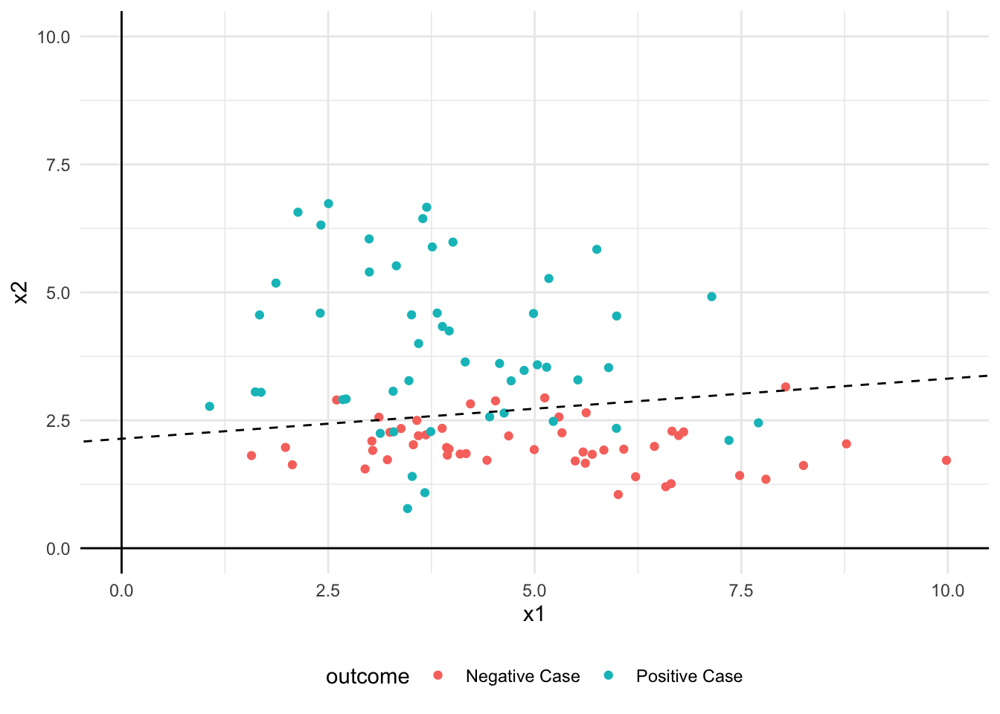

library("tidyverse")Visualise Decision Boundary
TL;DR
Load Libraries
Create Example Data
set.seed(366)
example_data <- tibble(
x1 = c(rnorm(n = 50, mean = 5, sd = 2),
rnorm(n = 50, mean = 4, sd = 1.5)),
x2 = c(rnorm(n = 50, mean = 2, sd = 0.5),
rnorm(n = 50, mean = 4, sd = 1.5)),
outcome = c(rep(x = "Negative Case", times = 50),
rep(x = "Positive Case", times = 50)),
y_true = c(rep(x = 0, times = 50),
rep(x = 1, times = 50)))Create Model of Example Data
my_mdl <- example_data |>
glm(y_true ~ x1 + x2,
data = _,
family = binomial(link = "logit"))
b <- coefficients(my_mdl)
b0 <- b[1]
b1 <- b[2]
b2 <- b[3]Compute the Predictive Performance of the Model
example_data <- example_data |>
mutate(y_pred = predict(object = my_mdl,
newdata = tibble(x1, x2),
type = "response"))
example_data |>
summarise(accuracy = mean(y_true == (y_pred >= 0.5))) |>
print()# A tibble: 1 × 1
accuracy
<dbl>
1 0.82Visualise Example Data and Model Decision Boundary
my_plot <- example_data |>
ggplot(aes(x = x1,
y = x2,
colour = outcome)) +
geom_vline(xintercept = 0) +
geom_hline(yintercept = 0) +
geom_point() +
geom_abline(
intercept = -b0 / b2,
slope = -b1 / b2,
colour = "black",
linewidth = 0.5,
linetype = "dashed") +
scale_x_continuous(limits = c(0,10)) +
scale_y_continuous(limits = c(0,10)) +
theme_minimal() +
theme(legend.position = "bottom")
print(my_plot)
Decision Boundary
\[ \begin{align} logit(p) &= \beta_{0} + \beta_{1}x_{1} + \beta_{2}x_{2} \Rightarrow \\ p &= \frac{1}{1 + e^{\beta_{0} + \beta_{1}x_{1} + \beta_{2}x_{2}}} \Rightarrow \\ \frac{1}{2} &= \frac{1}{1 + e^{\beta_{0} + \beta_{1}x_{1} + \beta_{2}x_{2}}} \Rightarrow \\ 2 &= 1 + e^{\beta_{0} + \beta_{1}x_{1} + \beta_{2}x_{2}} \Rightarrow \\ 1 &= e^{\beta_{0} + \beta_{1}x_{1} + \beta_{2}x_{2}} \Rightarrow \\ 0 &= \beta_{0} + \beta_{1}x_{1} + \beta_{2}x_{2} \Rightarrow \\ \beta_{2}x_{2} &= -\beta_{0} -\beta_{1}x_{1} \Rightarrow \\ x_{2} &= -\frac{\beta_{0}}{\beta_{2}} -\frac{\beta_{1}}{\beta_{2}}x_{1} \end{align} \]